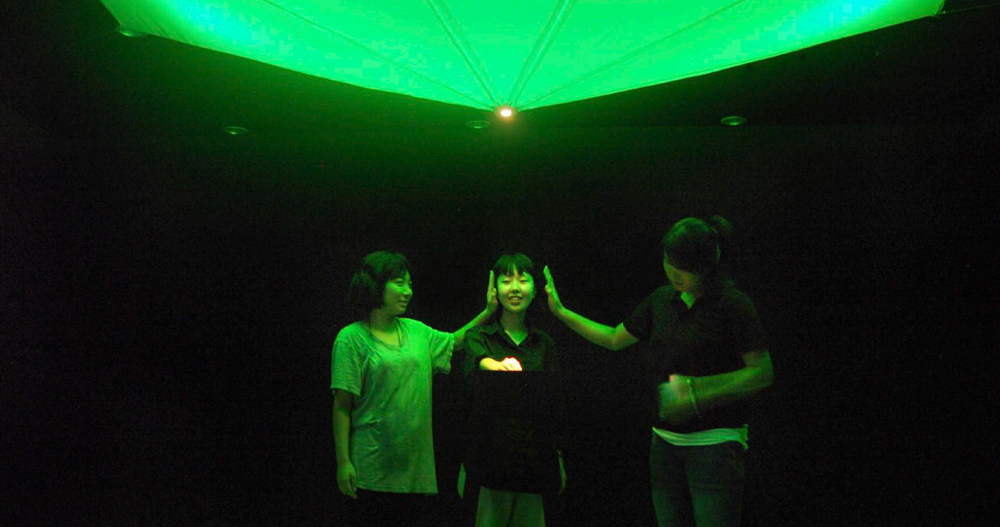
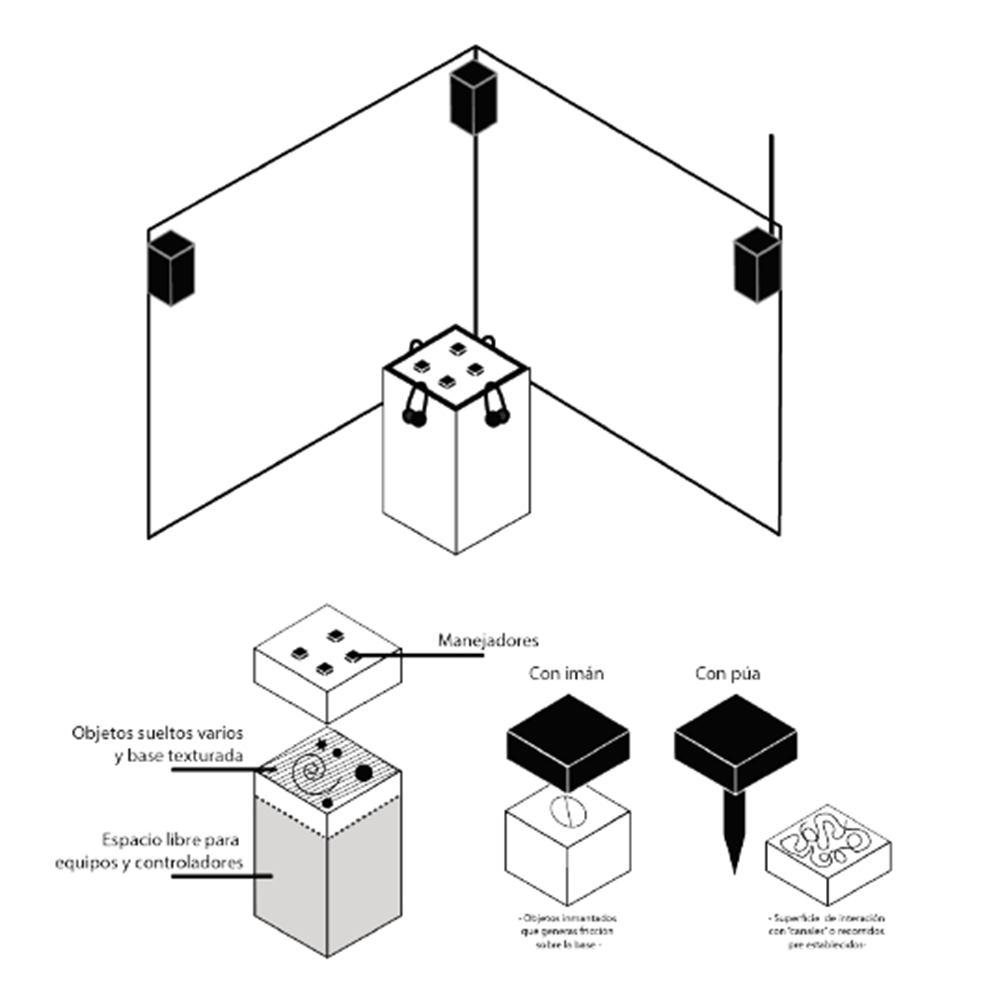

El concepto en el cual esta obra se basa es la sinestesia, sensación en la cual se produce la asimilación conjunta o interferencia de varios tipos de sensaciones de diferentes sentidos en un mismo acto perceptivo.
Acerca de
La obra se trata de una instalación / instrumento interactivo, la cual consiste en una superficie cuadrada de 1x1m sobre la cual se disponen pequeños manejadores con los cuales el usuario interactúa frotándolos contra dicha estructura. El objeto tendrá 4 pares de auriculares para la interacción de hasta 4 personas con el instrumento.
Cada manejador tiene una textura particular en su base, que es captada por micrófonos de contacto colocados a lo largo de la estructura. Ese sonido resultante es procesado mediante un software y traducido hacia un paisaje sonoro análogo a dichas texturas.
Se trata de una experiencia inmersiva y personal, pues cada usuario tendrá su propio par de auriculares, y pueden estar varias personas escuchando en simultáneo. La experiencia que cada uno tendrá será única y distinta.
Conceptos técnicos
Cada textura frotada está conectada a un micrófono de contacto. Este sensa las vibraciones y las transmite hacia el software de procesamiento de sonido (en este caso utilizamos Pure Data). Son 8 micrófonos en total.
El procesamiento se lleva a cabo en tiempo real. Se le aplican filtros de sonido y diversos efectos para lograr una textura y color particular a la mezcla resultante.
Cómo llegar
La obra se encuentra montada en la Universidad Nacional de Las Artes, Sede Multimedia. Sala 102.
Colectivos que acercan: 20, 8, 130, 152, 168, 33, 53.
Presupuesto desglosado para quienes requieran contratar y exploner la obra